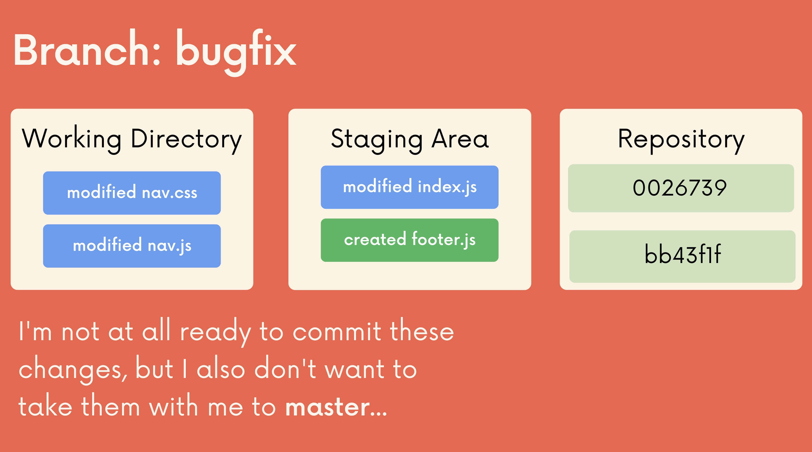

Git 101: Stash (P3)
git stash
Giả sử bạn đang sửa 1 đống file ở 1 branch feature nào đấy, đột nhiên xuất hiện lỗi ở production, bắt buộc bạn phải switch sang nhánh master để sửa nhanh xong sẽ quay lại nhánh hiện tại, trong trường hợp này phải xử lí sao với đống file đang sửa bây giờ?

Trước đây nếu nhiều, thì mình thường tạo commit luôn, còn nếu trong 1 file sửa vài dòng thì mình dùng lệnh git stash vì mình nghĩ git stash đơn thuần là xóa đi toàn bộ phần đã sửa và quay lại commit HEAD. Tuy nhiên, nếu commit thì thực chất nó hơi thừa, vì cũng chưa hoàn thành xong đủ để mà viết commit cho chuẩn, sau này sẽ gây rác khi xem lại lịch sử.
Trong trường hợp này, git cung cấp cho chúng ta 1 công cụ, đó chính là git stash. Vâng, chính xác nó là lệnh mình vẫn hay dùng, tuy nhiên ý nghĩa của nó không phải như những gì mình vẫn nghĩ 😄.
Lệnh git stash sẽ lưu những thay đổi hiện tại (unstaged và staged) vào 1 kho, sau đó bạn có thể lấy lại ra những thay đổi bất kì lúc nào.
Trong trường hợp bạn tạo file mới, tức là những file đấy vẫn chưa được theo dõi bởi git ( untracked), để có thể đẩy những file đó vào stash, chúng ta cần thêm -u vào sau: git stash -u .

Để lấy ra stash gần nhất và ghi lên nhánh hiện tại, chúng ta dùng lệnh git stash pop . Lệnh này sẽ lấy ra đồng thời xóa stash gần nhất trong kho.

Trên thực tế, phần lớn thời gian, nếu cần dùng git stash chúng ta chỉ dùng 2 lệnh trên. Tuy nhiên, chúng ta cũng sẽ đi qua nhanh 1 lượt các tính năng khác của git stash :
git stash list: lấy danh sách các stash trong kho, danh sách hiện ra theo thứ tự mới nhất đổ xuống.git stash apply stash@{<n>}: áp dụng stash nào cho nhánh hiện tại, khi dùng apply thí stash sẽ ko bị xóa khỏi kho.git stash drop stash@{<n>}: xóa 1 stash.git stash clear: xóa toàn bộ kho stash.
Tham khảo: